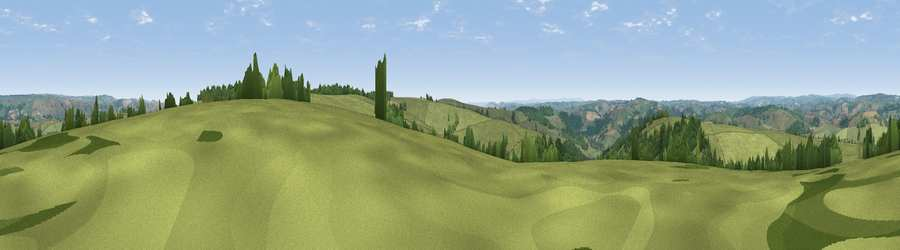

Viewpoint near Bampton
#13256 in England · top 23% of its area beats it · near Bampton · path 192 mWhere it is
The exact computed spot (SS 97275 20725). Click the marker for map links.
Public access: the nearest public right of way is about 192 m away — the final stretch may cross private land. Computed from Natural England's CRoW access layer and OpenStreetMap rights of way — not the legal definitive map. Always verify locally.
The view, rendered

A 360° render of this exact spot computed from the terrain model, tree cover and land cover — summer colours, afternoon light, calibrated against photographs of famous viewpoints. Real trees, hedges and buildings will differ in detail.
The panorama
Grey silhouette: terrain skyline in each direction (720 bearings, Earth curvature and refraction included). Dashed green: skyline with trees (+15 m) and buildings (+8 m) as obstacles. Blue strip: how far the ground is visible on each bearing.
Where the view opens
Wedge length = distance to the farthest visible ground on that bearing (vegetation-aware). Rings at 10, 25 and 50 km.
What fills the view
81% grassland · 17% woodland · 2% cropland
Angular shares of the visible panorama (visual magnitude), not map area. Landscape diversity 0.24 (0–1 Shannon).
Key numbers
More beautiful places nearby
The staircase of upgrades: each row has a higher view potential than everything closer. Driving times are estimates from straight-line distance, calibrated against real road routing — check an actual route before setting out.
| Place | Direction | Drive | Score |
|---|---|---|---|
| Viewpoint near Huntsham | S · 2 km | ~5 min | 65.4 |
| Barton Hill | S · 4 km | ~10 min | 66.1 |
| Viewpoint near Chevithorne | S · 5 km | ~10 min | 66.2 |
| Heniton Hill | E · 7 km | ~14 min | 66.6 |
| Viewpoint near Skilgate | N · 8 km | ~16 min | 72.5 |
| Viewpoint near Wiveliscombe | ENE · 11 km | ~20 min | 75.1 |
| Viewpoint near Roadwater | NNE · 16 km | ~28 min | 82.9 |
| Viewpoint near Roadwater | NNE · 18 km | ~31 min | 83.6 |
50.97674, -3.46459 · source: screening · position refined by local search. Computed location — check access rights before visiting.